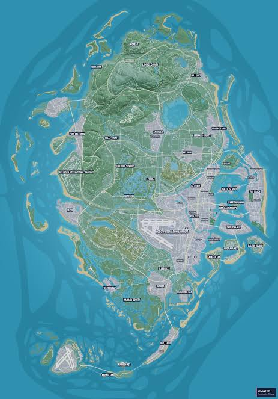
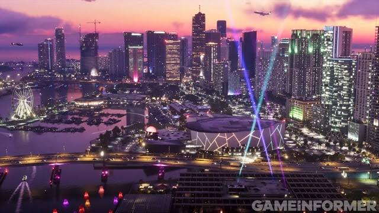
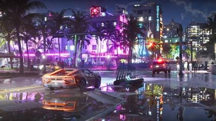
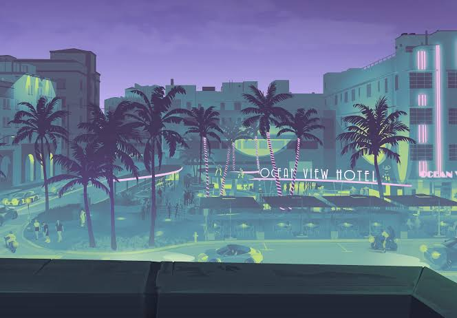

Штат Леонида · Флорида
Игровой мир GTA VI
Путешествие по Леониде — от горных лесов на севере до тропических островов на юге.
Карта штата
Масштаб и плотность — другой уровень
Леонида — вымышленный аналог Флориды. По предварительным оценкам, её карта примерно вдвое больше Лос-Сантоса и округа Блэйн из GTA V.
Вместо пустых пространств здесь ожидаются оживлённые пляжи, множество интерьеров и сотни тысяч анимаций NPC. Неизученные районы могут быть скрыты туманом — карту предстоит открывать самому.




Маршрут с севера на юг
Районы Леониды
Каждая остановка — со своей природой, ритмом и атмосферой.
-
01 · СЕВЕР
Mount Kalaga National Park
Природный массив с лесами, реками и тропами. Здесь можно отправиться на охоту, рыбалку или вылазку по бездорожью.
-
02 · ПОБЕРЕЖЬЕ
Port Gellhorn
Уставший прибрежный городок с дешёвыми мотелями и заброшенными зданиями. Его рабочая атмосфера совсем не похожа на блеск Вайс-Сити.
-
03 · ГЛУБИНКА
Ambrosia
Промышленно-аграрный район с сахарным заводом, полями и байкерской культурой.
-
04 · МЕГАПОЛИС
Vice City
Современный Майами: неон, пляжи Ocean Beach, порт, клубы и плотный трафик. Дорогие районы соседствуют с уличными кварталами вроде Little Cuba.
-
05 · БОЛОТА
Grassrivers
Болота и мангровые заросли. На аэролодках можно исследовать глухие протоки, где встречаются аллигаторы.
-
06 · ОСТРОВА
Leonida Keys
Тропические острова, соединённые длинными мостами. Здесь подойдут катера и гидроциклы, а на воде найдётся место для контрабанды и других дел.